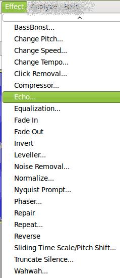

Introducción
 El objetivo fundamental de este tema es proporcionarnos una serie de herramientas que permitan manipular, experimentar, masterizar y producir un fichero de audio con unas características auditivas diferentes a las originales. Muchas de estas características, en la mayoría de las ocasiones, las utilizamos para mejorar la calidad del sonido y, en otras, para generar sonidos "diferentes" que produzcan un aspecto innovador o experimental de zonas concretas de nuestro fichero.
Según Wikipedia, "Un efecto de sonido o efecto de audio es un sonido generado o modificado artificialmente". Ello nos lleva a la conclusión que nuestros ficheros de audio, al igual que ocurre con las imágenesy videos, podemos "retocarlos para darle un aspecto, bien más profesional, bien de mejor calidad en la generación de un fichero final.
Existen dos tipos de Efectos en Audacity:
-
Internos: aquellos que dispone el programa una vez instalados y que podemos ver en el menú Efectos (Effect).
-
Externos o Adicionales: aquellas plug-ins que agregamos para disponer de un mayor número de efectos. Dependiendo del Sistema Operativo en el que se ejecute nuestro programa de audacity, dipondremos de diferentes tipos de ellos. En la parte inferior de esta página disponemos de un enlace sobre los mismos.
Entre los efectos básicos que se deben conocer son los de ajustar el volumen (modificar el ancho de banda), cambiar el tono de algunas porciones de la línea de tiempo para mejorar su calidad, utilizar los fade (introducciones y finalizaciones) para cambio entre pistas o secuencias de sonido, eliminar los ruidos de nuestro fichero de audio, cambiar el tiempo sin cambiar el tono (acelerar o ralentizar una onda de sonido), la utilización de eco para repetir el audio seleccionado varias veces y con un tiempo fijo de retraso entre las mismas, realzar los sonidos graves (bassboost), entre otros.
Debido a la gran cantidad de opciones que cada uno de los efectos nos puede brindar hemos dividido el apartado de Efectos en varios temas.
Jo.R.C.A. 2004 - 2011

Edición de Audio y Video con Software Libre by José Ramón Cerdeira Alonso is licensed under a Creative Commons Reconocimiento-No comercial-Compartir bajo la misma licencia 3.0 España License